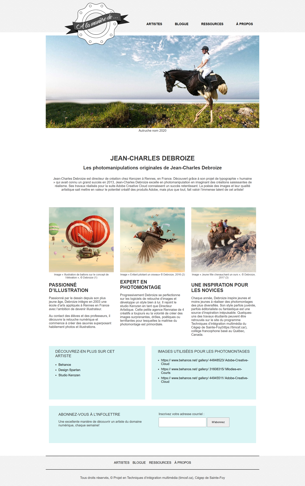
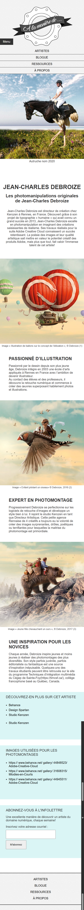
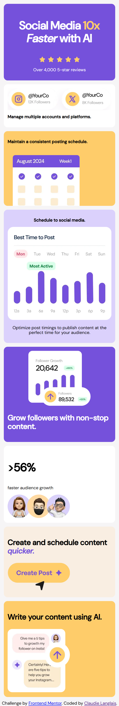
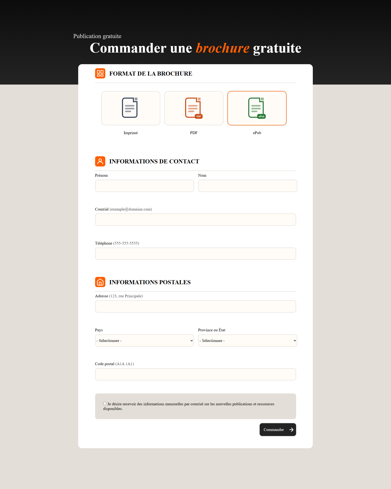
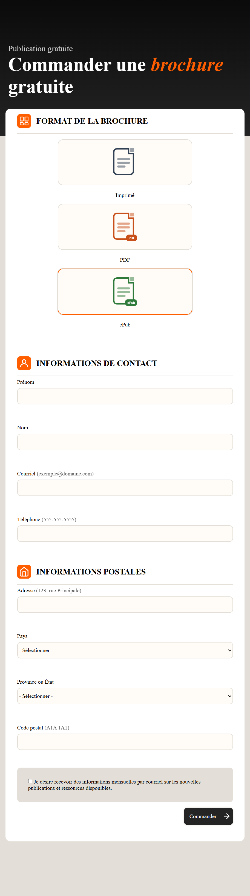

En quelque mot
Ce site présente les travaux réalisés dans le cours d'intégration 2 cette session. Chaque projet m'a permis de pousser mes connaissances et d'apprendre plus sur le HTML et le CSS, comme Flexbox ou CSS Grid
Projets
Semaine 2
TP
TP-1 : À la manière de ...


Apprentissages :
header/main/footer
h1-h6
Validation HTML
Sémantique
Ce travail pratique était l'occasion d'appliquer l'approche en amélioration progressive: intégrer d'abord le HTML structurel et sémantique
Semaine 2
TP
TP-1 : À la manière de ...
Ce qui était difficile
Configurer Github et comprendre comment les commits fonctionnaient et centrer les éléments avec le flexbox.
Ce dont je suis fière
J'ai réussit à coder le flexbox des articles avec wrap pour qu'il change se la taille de l'écran.
Semaine 6
TP
TP-2 : Frontend Mentor - Solution Grille Bento

Apprentissages :
Marquage HTML5 sémantique
Propriétés CSS personnalisées
Flexbox
CSS Grid
Workflow mobile-first
Semaine 6
TP
TP-2 : Frontend Mentor - Solution Grille Bento
Ce qui était difficile
J'ai trouvé difficile de placer et d'alligner le contenu dans un grid en utilisant grid-template-columns et grid-template-rows.
Ce dont je suis fière
Je suis fière d'avoir réussi à placer les images en arrière plan et de les avoir aligné comme demandé.
Semaine 9
TP
TP-3 : Formulaire accessible validé


Apprentissages :
HTML5 sémantique
CSS
Flexbox
Approches mobile-first et en amélioration progressive
Semaine 9
TP
TP-3 : Formulaire accessible validé
Ce qui était difficile
J'ai trouvé difficile de mettre une image dans un bouton checkbox et qu'on puisse toujours le sélectionner et focaliser.
Ce dont je suis fière
Je suis fière des inputs de type texte avec des patterns pour la vérification des entrées de données.
Semaine 11
TP
TP-4 : Kampadejo


Apprentissages :
Navigation accessible
CSS
Workflow mobile-first
Semaine 11
TP
TP-4 : Kampadejo
Ce qui était difficile
J'ai trouver plus compliqué d'afficher le menu fermé et ouvert avec les images du X et les lignes.
Ce dont je suis fière
Je suis fière des bordures et du survolement du texte de navigation dans le Hover et Focus.